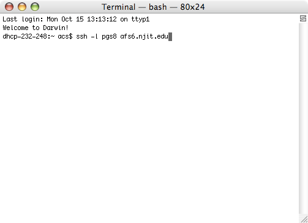
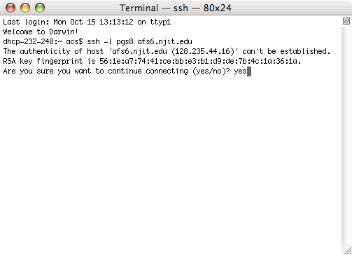
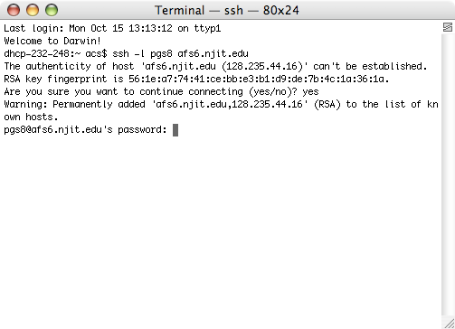

Title
To manage files and folders on AFS through the terminal, we must first establish a connection to the AFS server, and one way to do this is through SSH. The command to connect to an AFS server is
ssh -l [USERNAME] [SERVER ADDRESS]
If you see the following message, type ‘yes’ to continue.
Then, enter your AFS account password.
You are now connected to the AFS server and, depending on the server’s OS, can use most common UNIX commands.
You can use the pwd to check your current directory, and the cd command to navigate to a relative or absolute directory.
Once you are in the directory where you want to create a new file or folder, use the touch and mkdir commands respectively.